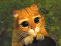

De: La Frikipedia, la enciclopedia extremadamente seria.
De: La Frikipedia, la enciclopedia extremadamente seria. De: La Frikipedia, la enciclopedia extremadamente seria.
|  | Este artículo participa del Certamen de Adopción, así que mientras tenga esta plantilla no lo toques porque sino este gatito se enojará contigo. |
| De la serie Literatura del mundo: | ||
| Harry Petas y la Cámara Porrera | ||
| ||
| Escritor | Esa que solía ser pobre. | |
| Editorial | Bloomsporry | |
| Género | Drogas, sexo mediano y magia de todo tipo, si sabes a lo que me refiero. | |
| Colección | Es el segundo libro de la saga, creo. | |
| Año | Siempre es el año actual, porque las drogas no pasan de moda. | |
| País | Gran Porraña | |
| Idioma original | En todos lo que uno puede conocer. | |
| Ediciones vendidas | | |
«-¡Abracadabra!,¡Pata de cabra!,¡Patatum,patatam!»
~ Harry tratando de hacer magia sin la droga de por medio.
«¡Dolby malo! ¡Dolby malo!»
~ Dolby el duende en una sesión de sadomasoquismo.
«Nuestro sobrino, ya ven…, está muy mal…, se altera al ver a desconocidos, así que lo tenemos en el piso de arriba…»
~ El pobre de tío Vernon tratando de defender al Petas luego de que éste se mandara una de las suyas delante del jefe de Vernon.
«Es la mejor casa que he visto nunca.»
~ Harry mintiendo al ver a "La Borrichera" la casa de la familia Whisky.
«-¡Todo el mundo a la cola! -gritó Malfoy a la multitud-. ¡Harry Petas firma fotos!»
~ Draco Malfollado demostrando su fanatismo por el Petas, que tan bien disimula.
Luego del mega aplastante éxito de Harry Petas y la piedra pa'l mechero, la Rowling comenzó a darse la gran vida por ahí.
Se acercó al café en el que escribió su primer obra maestra, volcó todas las bebidas alcohólicas y le prendió fuego.
Cuando las autoridades le preguntaron por qué lo hizo, ella se defendió explicando que se le escapó un hechizo llamado "Incendio" sin querer.
No la llevaron presa porque eran todos Druggles (personas sin droga) y nadie pudo con su mágia. En esa interminable juerga algarábica que no parecía tener fin, Rowling comienza a ver cómo su cuenta bancaria flaqueaba por la crisis, así que decidió hablar con la editorial Bloomsporry para hacer la continuación de su primer gran obra.
La editorial la mandó de cabeza a escribir, en un cuarto ailado, sin ventanas y con sólo una mísera lámpara que fallaba de vez en cuando.
Le otrogaron una Pentium IV con acceso limitado a interné, el programa Word y una caja de chinas con efectos psicodélicos.
El resultado, después de un increíble mes, fue el segundo libro de la saga del jóven mago drogadicto: Harry Petas y la Cámara Porrera, que curiosamente se asemejaba a la cámara en la que su autora estuvo encerrada.
La editorial lanzó el nuevo libro al mercado, que aceptó de buen modo las escrituras, pasando por alto las terribles faltas ortográficas de su autora.
En menos de dos semanas, la cuenta de la Rowling subió el triple, pero ella no pudo disfrutarlo tanto, porque Bloomsporry volvió a aislarla para que termine de una puta vez con los años de Harry en el internado de Joguarts.
Luego de haber sido enviado de nuevo a su hogar para tomar aire libre, a Harry se le permitió rondar por toda la casa de sus tíos tal y como Dios lo trajo al mundo.
Su tía le hacía pasteles todos los días, su tío le traía las pantuflas y el diario de cada mañana y su primo le hacía de taburete para apoyar sus patas en él.
Sin embargo, a menudo Harry sufría el delay que dejan los porros si no se los consume en cierto tiempo, y comenzó a divagar, encerrándose en su cuarto, alegando que sus tíos lo odiaban, que su primo era un matón, y que no podría salir dado que el jefe de la compañía de su tío vendría a cenar esa noche, y los Durschley le habían obligado a esconderse por que les daba vergüenza y asco puro.
Como desde Joguarts se le había dado la regla a su familia de que le siguiera la corriente al enfermo, ellos no hicieron gran cosa.
Pasan muchos desastres por la abstinencia de Harry, hasta que finalmente regresa a Joguarts, en donde nuevas aventuras Porríficas lo esperaban.
Bueno, aparte de los principales y aquellos que se mencionaron en el primer libro (espero que lo hayas leído), aparecieron más personajes que hundirán la vida de Harry Petas hasta un sitio desconocido por el niño y la institución propia.
Un día a la noche mientras Harry hablaba con un calcetín en su habitación, se le aparece por arte de magia el duende Dolby Digital.
El duende le dice que no debe regresar a Joguarts, dado que el camino que estaba tomando el niño en ese momento era de lo más sano, y pronto podría recuperarse y re insertarse en la sociedad.
Harry no quería oír nada de la suciedad, por lo que se tapó los oídos y comenzó a golpearse la cabeza contra la pared.
El duende Dolby aparece también una vez que el muchacho, ya bajo los efectos de la María y algunos piscolabis, pisa el centro de internación de nuevo. Lo ataca en un partido de Droguíditch y le quiebra una uña, pero todo era "por su bien". Aperece más tarde.
También aparece en los libros subsiguientes, pero los directores de las películas no lo creyeron un buen camello para poder trabajar con los protagonistas. Diría también lo que le sucede en el último libro del Petas, pero eso sería un gigantísimo spoiler y no da.
Es un hombre de 40 años al cual, de tanto consumir Crack, se le retrasó el reloj natural y parece jóven, pero no señores, es un total estúpido, dado que la droga destruyó sus neuronas.
Jamás se supo la razón de que lo hayan dejado impartir clases en Joguarts y que no le enviaran formularios de seguros de vida a los padres de los internos por si alguno moría en las clases de éste maníaco drogarífico.
Joguarts lo contrata para darles el ejemplo a los internos de cómo pueden terminar si aspiran a mucho en la vida, con doble sentido y si es que alguno le queda vivo hasta el final del año.
El profesor Gil irá haciendo todo tipo de estupideces por el libro, como soltar mariposas Ygaena Trifolii en medio de la clase para darles una nueva manera de intoxicarse a los internos, o perseguir a Harry y a Ron hacia la Cámara Porrera y provocar un alud de rocas.
Acompañará a Harry y a Ron a otro sitio, pero es un spoiler y quiero que leas todo el artículo, así que lo digo más abajo. Igual ya lo dije más arriba.
Por supuesto, no podía faltar el padre de Draco Malfollado, el capo de la droga.
Es un hombre alto, con el pelo cano de tanto consumir Polvo de Ángel, que se le presenta a Harry a lo largo del libro para inportunarlo y pasarle una china por la nariz para que rompa su abstinencia y le quiten puntos a sus casas.
En la película se omite el momento en el que se muele a palos con Arthur Whisky, el padre de los conejos Whisky, dado que el actor que lo interpretó dijo que no quedaba bien que un Dealer respetado se metiera en una reyerta con un pobretón leproso.
A esto le siguieron varias denuncias por discriminación y xenofobia, pero Lucio demostró que la droga todo lo puede. Es además un maníaco sexual, pero según la autora, esto no se pudo demostrar mucho, al menos en el segundo libro, dado que la editorial Bloomsporry todavía insinúa que es un libro para infantes.
Un misterioso y no menos drogadicto interno que vivió en Joguarts hace 50 años, pero como la magia y las alucinaciones rodean el aire, el tipo nomás puede salir de un librito y pasearse por ahí.
Le habla a Harry, quien le pregunta sobre la Cámara Porrera, una antigua leyenda de la institución; al parecer, Tom tiene información de primera mano sobre esa cámara, pero para obtenerla, Harry deberá dar algo más que sus polvos...
Es un nuevo interno en su primer año aislado de la sociedad sana. Al parecer sus padres son Druggles, pero él comenzó a darse con harina para ver si salía algo, por lo cual cayó directo en Joguarts.
Fue ingresado al instituto sin oponer resistencia, a diferencia de Harry, y se le conoce por ir siempre aferrado a una cámara del año del arquero, tomando fotos que lanzan flashes capaces de dejar ciego hasta a un topo.
Ya en primer instancia, es golpeado por todos los internos, dado que Cola no hace más que tomarles fotos a todos para comparar sus rostros extasiados y perdidos, acusándolos así ante los profes.
Al conocerlo y ser fotografiado sin su permiso, Harry le estampa una piña en medio de la nariz y le escupe en el ojo. Aparece en otros libros, incrementando el deseo del lector de que pronto se muera, ¿será posible que en el séptimo año del Petas esto suceda?
Es una araña gigantesca, la cual, por haber sido alimentada nada más que con GH, tomo su enorme aspecto. Recientemente nos llegó mediante una entrevista a la Rowling, la información de que también consume Sales de Baño.
Jagrid la cuidaba, hasta que hace 50 años (o sea que el barbudo debe tener como 60) la arañita fue inculpada por matar a una niña de sobredosis, cosa de la que fue medianamente culpable.
Jagrid tuvo que dejarla escapar hacia el Bosque Prohibido, en donde la alimenta gracias a la plantación de María que tiene en un apartado fuera de la vista.
Atacará a Harry y a Ron porque no le gusta la gente blanca y anda con abstinencia.
Extraño fantasma que ronda por los baños de Joguarts, viendo las gracias de los internos cuando van a orinar o a hacer la otra cosa.
Todos la odian, porque siempre que uno le pasa por al lado, desprende un inconfundible aroma a Marihuana seca, por lo cual la mayoría de los internos vuelve a caer en la adicción.
Curiosamente, Myrtle fue encontrada en los pisos del baño de chicas, tumbada boca arriba y con los ojos en blanco, obviamente víctima de una sobredosis, muerte preferida de los famosos.
Nadie se encargó de investigar bien el caso del culpable, dado que a Myrtle no la quería ni la madre que la parió.
Dambuldor cerró el caso.
Comienza con Harry corriendo hacia su habitación en su cumpleaños, dado que según él, los Durschley lo confinaron para no mostrar su horrendo rostro de abstinencia ante el jefe del tío y su esposa, y perdiendo su regalo, el cual era una Play Station 4.
Harry se pone a conversar sobre política con un calcetín que guarda el Pie de Atleta, cuando se le aparece un duende llamado Dolby, el cual, luego de acosarlo sexualmente, le advierte que no regrese a Joguarts.
Harry, obviamente indicando que ni ebrio regresaría a esa maldita institución, le confirma al duende que no regresará jamás.
Enojado y pensando que lo que decía Harry era sarcasmo, el duende baja y le lanza un pastel lleno de Brownies Cósmicos a la esposa del jefe, la cual comienza a divagar.
Al día siguiente, Harry instala barrotes en su ventana y ante la incrédula mirada de su familia, que no lo culpaba por el ataque de abstinencia de la noche anterior, se encierra en su alcoba sin posibilidad de salir.
Más tarde, esa misma noche, un auto volador impulsado a control remoto se detiene frente a la ventana de Harry.
Se trataba nada más y nada menos que de su mejor amigo Ronald McDonald's Whisky y sus malévolos hermanos gemelos, Freddo y Jorge Whisky.
Se asombraron de ver que los Druggles habían encerrado a Harry por una causa injusta, según lo contado por el niño, con lo cual tomaron un arnés surgido de la nada (Magia) y tiraron abajo toda la pared.
Sus pobres tíos, asustados, corrieron junto a su hijo hacia la habitación del pendejo inadaptado.
Luego de tirar la puerta abajo, pudieron ver a Harry haciendo equilibrio entre los escombros, por lo que su tío se lanzó hacia él y trató de tenerlo del pie para que no se cayera y se hiciera mierda.
Sin embargo, Harry interpretó esto como un intento de captura para no dejarlo marchar, por lo que con su otra pierna le pegó una patada a su tío, destrozándole el tabique y dejándolo caer al vacío, alegando que Dios lo tendrá en su gloria.
Ya viajando por el cielo sin cables, los Whisky le convidan a Harry la primera china en tres meses, por lo cual el niño alucina y suelta a su lechuza Hachig para que vuele por ahí y se muera.
Llegaron nomás rayaba el alba el cielo, los cuatro volteados y viendo cosas, hacia la casa de los Whiskys, la cual recibe el nombre de La Borrichera.
Al entrar, son sorprendidos por la madre de los pelirrojos, la cual saca un martillo y muele a golpes a sus tres hijos por haberse robado el auto de su padre.
A Harry le tocó un golpe por no haberse anunciado antes. En la misma casa, si es que se le puede llamar así, Harry ve a Shiny Whisky, la hermana menor de toda esa familia de conejos.
Shiny se asusta de verlo, por lo cual siempre corre cuando Harry se le acerca y está en estado psicodélico.
Más tarde, la familia Whisky da a conocer a Harry todo sobre los Polvos Achisú.
Eran unos polvos que uno aspiraba, pensaba en un lugar al que ir, y al abrir los ojos, allí se encontraba (Magia).
Esa tarde, la familia de pobretones y Harry tenían que ir al Callejón Chinón para comprar los libros del nuevo año. Lo malo es que Harry aspiró mal, por falta de práctica en el verano.
Se ahogó y dijo Callejón Drogón, que era en la otra punta del mundo; como resultado, terminó en un lugar muy oscuro, en dónde había gente con pancartas de "NO A LAS DROGAS" y se los veía quemando chinas por doquier.
Ya a punto de enloquecer, Harry es encontrado por Jagrid, quien estaba ahí para comprar...eh, repelente para babosas come plantaciones de...sandías.
Lo sacó de ahí y lo hizo reencontrarse con los Whiskys, que ya estaban junto a Ermion y sus padres Druggles. Entonces se dirigieron a la librería Floripondio y Birra, en donde conocen a Gil de Crackard y se van a la mierda poco después.
El día de la partida, al parecer Harry y Ron no pueden pasar por la barrera (obvio, era una pared sólida), por lo que se la dan de rebeldes sin causa y roban el auto volador.
Nomás al llegar, Ron con la varita partida no logra pisar el freno y él y Harry se estrellan contra el Sauce Drogador, quien comienza a intoxicarlos con humo.
Ya al salir casi muertos del auto, ni hablar los animales, son castigados por el profesor Snape por destruir propiedad del colegio sin contar con un permiso. Los dejaron sin comer por dos noches y a raiz de sus alucinaciones, dejaron que Ron aprobara el año con la varita rota.
Al día siguiente, los internos tenían clase de Defensa contra las Drogas Oscuras con el nuevo profesor. Al fin y al cabo, la soberana idiotez de Gil de Crackard los hizo darse cuenta de que aspirar mucho estaba mal.
Viendo que los internos lo iban a violar, Crackard los retó a probar nuevas maneras de darse con alucinógenos, por lo cual les enseñó una jaula llena de Mariposas Ygaena Trifolii y las soltó ahí nomás; acto seguido, cerca de 38 personas fueron hospitalizadas por intoxicación extrema.
A Crackard le aumentaron la paga por enseñar al internado que no se jode con la naturaleza, y Ermion ganó 20 puntos para Trifindor y una patada en el culo.
A la semana siguiente, Draco Malfollado volvió a las andadas, pero como Harry se había forjado una buena reputación en el primer libro y molestar a Ron era caer muy bajo, se las tomó con Granger. Comenzó a hacer correr la noticia de que Granger no tenía la sangre pura de un drogadicto o alcohólico, sinó que era de "Sangre Aguada".
Al parecer se trataba de un insulto muy grande, porque Ermion comenzó a llorar y a arrancarse mechones de cabello, y Ron, en un pobre intento de venganza, se hechizó a sí mismo para poder vomitarle zorullos a Draco en la túnica.
Funcionó, pero Ron estuvo vomitando mierda todo el día, por lo cual se perdió de la fumanchera de la tarde que se hacía clandestinamente en los baños. Los internos siguieron llamando "Sangre Aguada" a Ermione por el resto de los libros, secuelas y en la vida real, por lo que se cambió el nombre a Elba Gina.
Unos días después, Harry estaba terminando un castigo en el despacho de Gil de Crackard, cuando comenzó a oír voces, lo que le extrañó, dado que eso era un efecto por consumir drogas fuertes, y él últimamente sólo aspiraba Polvo Blanco del más fino a cambio de hacer la tarea de los demás.
La voz era profunda y sedosa, incluso comenzó a pedirle que se acerque, que quería desgarrarlo y chuparle la...sangre, por lo que sin permiso, Harry abandonó el despacho y fue en su busca; al llegar al segundo piso, nombrado "Las Marías", Harry divisó algo escrito en el fondo.
Se acercó y justo se daba la puta casualidad de que medio instituto había salido de sus clases de rehabilitación y pasaba por ahí. Al ver un animal desconocido en estado de petrificación (con los animales las drogas no, eh) y leer lo que había escrito arriba, sin dudas culparon a Harry, haciéndolo blanco de todas sus bromas.
En la pared decía: "LA CAMARA PORRERA HA SIDO ABRIDA; ENEMIGOS DE LAS DROGAS, TEMED".
Había llegado la temporada de deportes para los internos de la institución, y el juego se llamaba Droguíditch, el cual consistía en "volar" en escobas, pero como son Droga y Magia juntas, que no se le haga extraño a nadie.
Lo jugadores, siete en cada equipo, debían recorrer el terreno a lo Hooligan, disputandose todos una pelota molida a golpes y marcar goles al equipo contrario; dos de los integrantes por equipo, tenían bates para repeler a dos pelotas esquizofrenicas llamadas "Piedras" (ya sabes qué tipo de piedras) para que no bajen a los jugadores y caigan drogados e inútiles al terreno de juego.
A Harry le había tocado el puesto de "Buscador", el cual tenía que volar por el juego, esquivando a las Piedras, a los locos que se le cruzaban en el aire y a los hechizos que le lanzaba la multitud, incluyendo los profesores.
En su puesto, Harry tenía que hacerse con una pequeña pelotita con alas llamada Achitch, antes que lo hiciera el otro buscador, el cual lo estaba cagando a patadas; en medio del juego, una de las Piedras se lanzó contra Harry y no lo castra por poco.
A pesar de que sus compañeros trataban de alejar a la Piedra con bates, ésta golpea a Harry en la uña del dedo del medio y se la vuela; herido y muerto por la impresión, Harry logra capturar a la Achitch y cae muerto al terreno de juego; bueno, no se murió, pero casi.
Despierta en la enfermería, en donde se le presenta Dolby de nuevo, confesándose autor de semejante crímen, por lo que Harry le prende fuego y lo deja en pelotas. Al día siguiente, sin que le dieran el alta, llega Ron y le enchufa una jeringa, haciendo que Harry alucine y se olvide del dolor.
Luego, con ayuda de Ermion y sin que la enfermera los viera, se lo llevaron al gran Comedero para que pudieran aprender a cómo defenderse de los pedos del enemigo. Una vez allí, Harry es puesto a pelear contra nada más y nada menos que Draco Malfollado, el cual le lanza, enfadado por haber perdido, una larga serpiente homosexual a Harry.
El niño, sin saberlo por los efectos de los anabólicos, comienza a lanzar pedos diarréicos, los cuales calman a la serpiente, haciéndola desaparecer el profesor Snape. A pesar de que todos los rostros se veían confusos y borrosos, Harry pudo notar que lo miraban como a un animal exótico, con lo cual se sintió importante, pero la cosa no estaba para darse aires.
Ron y Ermion se lo llevaron y una vez hubo recuperado los sentidos, le explicaron que había hablando en el idioma "Pedórsel" un idioma qué sólo Quien-No-Debe-Ser-Nombrado-O-Se-Llevara-Todas-Las-Chinas podía hablar, con lo cual Harry estaba un paso más cerca de ser el Heredero de Eslíserin.
Como Harry le quería echar la culpa a otro, jugaron a l pirinola y saltó el nombre de Draco Malfollado, por lo cual los tres se exiliaron en el baño de Myrtle la Drogona y comenzaron a fabricar una poción super prohibída en la escuela por sus altos contenidos drogaríficos: La Poción Multi-Polvos.
Un día, mientras Harry montaba guardia por el baño (la poción había desaparecido misteriosamente y Myrtle era sospechosa) encontró de la nada un cuaderno rosado, el cual, al tomarlo, pudo ver que era muy antíguo y se trataba de un diario íntimo, porque en la portada aparecía Barbie sonriendo y decía "Guardaré tus secretos, amiga".
Emocionado por ver si se trataba de las anotaciones del ciclo menstrual de alguna interna, Harry le dio un vistazo, pero vio que dentro no había una sola mierda escrita, por lo que se llevó el diario a su habitación para ver si podía usar el papel para liar porros.
Esa tarde, Harry trataba de ver qué podía suceder si añadía tinta mágica a sus petas, por lo que probó escribiendo cualquier mierda en el diario de Barbie, el cual comenzó a hablarle sobre la Cámara Porrera y lo que había sucedido 50 años atrás con una niña que murió de sobredósis al haber olfateado el humo del monstruo que custodiaba la Cámara.
Emocionado por hallar mucha más droga de todo tipo existente y aún por descubrir, Harry tomó a Ron del cogote (Ermion estaba desmayada en la enfermería como otros estudiantes por intoxicación) y se piraron a la precaria cabaña del Jagrid.
Sólo que al llegar, tuvieron que esconderse detrás de un librero para que no los viera el ministro de la Magia (que va, era el ministro que manejaba el instituto) llamado Y un Cuerno Fadge, el cual junto a Lucio Malfollado había presentado ante el gigante una orden de arresto por el crímen de hace 50 años.
Dambuldor que estaba por ahí en un rincón, le dijo a Jagrid que le iba a envíar Brownies Cósmicos a la cárcel de Azcavan para que no la pasara tan mal. Antes de irse esposado, Jagrid dijo en voz alta que le gustaría que alguien le tirara Raid a las arañas y las siguiera para ver en dónde mierda tenían el nido las hijas de puta.
Una vez sólos, Harry y Ron se fumaron unas petas, tomaron dos envases de Raid y salieron a matar a las arañas, seguidas del perro de Jadrid, Fanta.
Ya habiendo matado a más de 200.000 arañas, Harry y Ron llegar al nido listos para combatir, pero lo que vieron podría haber hecho que se cagaran en los pantalosnes de no haber atribuído la visión a los efectos de la petas. Estaban ante una araña escandalosamente grande, la cual se presentó como Narcoáragog.
La araña comenzó a hablarles a los muchachos sobre la leyenda del monstruo de la Cámara Porrera, sin que los chicos se lo hubieran pedido. Les habló de un monstruo que era muy largo, como una serpiente, y que podía matar a cualquiera que aspirara su aroma a hojas de Mariguana y tuviera sólo una alucinación.
Harry le agradeció a la araña, se tiró un cuzco muy oloroso y emprendió la marcha con Ron y el perro Fanta; sólo que Narcoáragog no quería dejarlos ir, dado que si Jagrid no estaba, ella debía usar mano de obra esclava para cosechar sus plantas de María y alimentarla.
Como no vio un sólo resquicio de paga por el trabajo, Harry comenzó a correr con los otros dos inservibles, demasiado asustado ya porque las alucinaciones se estaban yendo. En medio de la persecusión, el auto salvaje aparece y los tres logran montarse en él para poder escapar de la araña comunista.
Al llegar a salvo a la institución, Harry y Ron raptan al profesor Gil de Crackard que se las daba de inteligente gritando a puro pulmon a todos, que él sabía la ubicación de la Cámara Porrera.
Van hasta el baño de chicas y Harry tiene acceso de diarrea, por lo que no llega y se lo hace en los pantalones; por suerte, lo pedos que sirvieron de bocina para la mierda, también consiguieron abrir un grifo de agua, inundando el baño y quedando abierto un pasaje secreto.
Los tres, como no tenían nada que perder, se lanzaron a ver si podían dar con el tesoro de Eslíserin y pegarse la fumancheada de sus vidas. Al llegar, Crackard se hace el intoxicado y al caer el suelo, le manotea el miembro a Ron, haciendo que éste pegue un grito de mujer y suelte su varita rota, con la cual Crackard se hechiza a sí mismo, quedando loco.
Harry dijo a Ron que se lo merecía, porque con las drogas no se jode; de repente, todo se derrumba y Harry queda sólo, por lo que se va a buscar el tesoro y ver si de paso se podía quedar a vivir en la Cámara, drogándose eternamente; nomás al llegar, descubre que Shiny había llegado antes que él, pero que estaba desmayada en el piso.
Harry no intenta despertarla, sino que recorre los alrededores para ver si encuentra alguna peta o papelillo, hasta que alguien le habla; el muchacho se presenta como Tom Drógolo Ryddle, y comienza a hablar a Harry sobre el estado de Shiny, pero como éste andaba con abstinencia, saca su varita, una navaja y le pregunta a Tom en dónde estaban las petas.
Tom le dice que ya no hay más, porque fue hace 50 años y ya estaba todo fumado, inyectado, ingerido y lo que sea posible, por lo que Harry entre en un estado de cólera, pero tiene que correr, porque sale el Achilísco, una serpiente enorme hecha de crack, pasta base y pegamento, para poder comérselo a él.
En eso, el fénix de Dambuldor sale de la nada y le come de ocho ojos al Achilísco, dejándolo ciego. Harry se da cuenta de que finalmente el director sabía que corría grave peligro, pero se limitó a dejarlo a su suerte, con sus 12 añitos; el fénix se lanza uno y cae de la nada también, el Sombrero Discriminador, el cual lo había enviado a él a la casa de Tríffindor.
Harry se acerca para ver si en su interior hay algún polvo, hongo o lo que sea, pero sólo encuentra una puta espada de alto valor; se enfada, le ensarta la espada al bicho y después destruye el diario, acabando con el heredero de Eslíserin. Se monta en el fénix con Shiny y se van a la mierda.
Una vez en el despacho del director, Harry y Ron debían cumplir castigos penitenciarios el año próximo por destruír todo el sistema de ductos de la escuela; sin embargo, les dió 50 puntos para Tríffindor a cada uno, qué para qué mierda les servían, vaya uno a saber.
Ron se fue corriendo aprovechando que Dambuldor estornudó, dejando a Harry a solas con él; para suerte del niño, Lucio Malfollado entró al despacho seguido de Dolby, que resultaba ser el duende de la familia Malfollado. Hablaron sobre las drogas que se consumieron alrededor del año, y Harry le entregó una china recién armada a Dolby, haciendo como que se la entregó Lucio.
Como no se le podía dar chinas a un duende, Dolby quedó liberado de esa familia de mierda y se fue a dar la gran vida. Actualmente se dice que fundó una compañía llamada Dolby Digital™.
Actualmente no existen críticas lo suficientemente malas como para poder dejarlas aquí; lo que sí, el libro ganó muchos premios, como "Mejor PorroLibro del año", "Premio por educar a la juventud sobre las drogas" y "El mejor papel para liar porros".
Se hizo una película muy larga, pero no cosechó el mismo éxito que el libro, por esa razón, la película recibió críticas demoledoras, a excepción del actor que interpretó a Dambuldor. El libro está ya traducido a 377 idiomas y faltan muchos más; fue catalogado como un perfecto y corto cuento para niños antes de mandarlos a dormir.
Además de eso su autora, la Rowling, confirmó en una entrevista que del capítulo "La Borrichera" en adelante, no recuerda haber escrito nada, pero que sí recuerda haber tecleado bastante.
De todas maneras, les dejo a quienes les interese, las críticas de algunas entidades famosas:
«Realmente una mierda, ha faltado droga y ha sobrado el sexo»
~ Al Pacino.
«Si hubiesen incluido la parte de las piñas entre Lucio y Arthur le daba el punto verde»
~ Warner Brothers.
«No me importa, yo sigo facturando billetes.»
~ La Rowling lavándose las manos.
«¡¡Excelente para disfrutarla en familia!!»
~ Diario New York Times..
«La verdad, la primera parte se me hizo más fácil»
~ El director de esta mierda película.
Obviamente el final de este...¿libro? si es que se le puede llamar así, es el mismo que en la primera parte; luego de transgredir las normas del instituto, salvarlos a todos, pero transgredir las normas del instituto, se envía a Harry junto a los demás buenos para nada hacia su casita.
Obviamente a Petas le da un ataque al saber que tendría que dejar su vida como Dealer para regresar con sus obtusos tíos y el gordo de su primo (personas amables, pero Harry tergiversa todo), por lo cual durante sus tres últimos días de clases se concentra en fraguar un plan para escapar, sin saber que en la cena del último día en el instituto los cocineros ponen sedantes en las bebidas para que al subir al tren de regreso, todos estén lo más tranquilitos posibles.
Sin embargo, el nuevo verano que Harry deberá pasar con sus tíos no está ni estará detallado en esta mierda con hojas, dado que eso se deja para el año siguiente, el cual lleva el nombre de "Harry Petas y el Cargamento de Azcavan".
Autor(es):